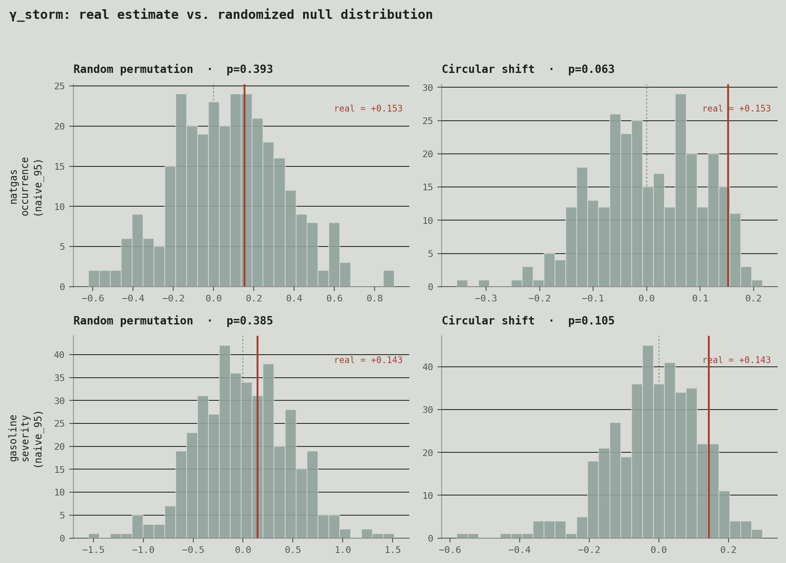
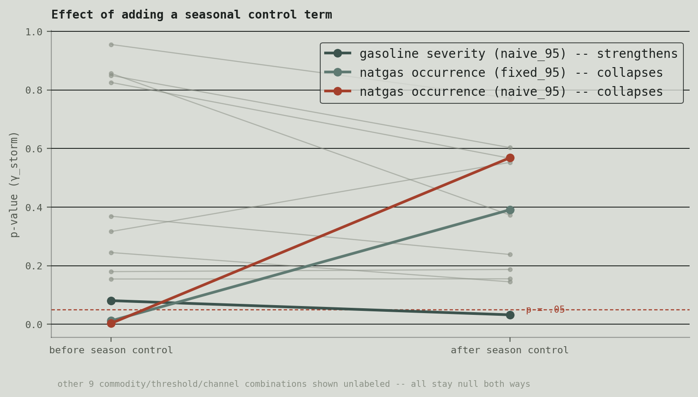
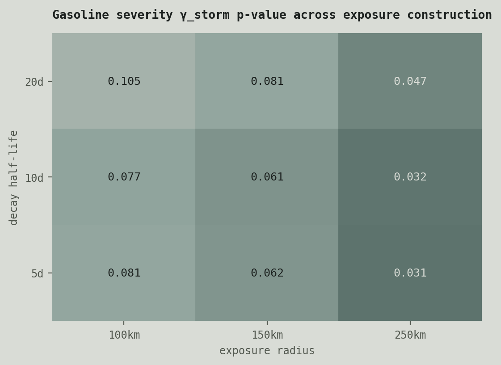

Tail Risk in Energy Commodities: A Score-Driven Approach with Satellite Covariates
A score-driven GAS/GPD framework for tail risk in WTI crude, RBOB gasoline, and Henry Hub natural gas futures — with the twist that the time-varying parameters are pushed not just by returns, but by physical covariates: NASA storm-track data and satellite temperature reanalysis.
At a glance
- Status
- Completed, null result
- Instruments
- WTI / RBOB / Henry Hub
- Framework
- GAS/DCS + GPD
- Toolchain
- Python
Full pipeline estimated end to end across all three instruments. No storm-exposure effect survives cross-threshold checks, seasonal controls, and placebo inference; it is currently being written up as a null result.
The question
Standard GARCH-family models let volatility respond to its own past, but energy markets have an unusually direct physical channel into risk: a hurricane shutting down Gulf refining capacity, or a cold snap spiking heating demand, moves the tails of the return distribution in ways that are visible in weather data before they’re visible in price data. The question is how much of energy futures’ tail risk can be explained by those physical shocks directly.
Methodology
The core engine is a score-driven time-varying parameter (GAS/DCS) model in the sense of Creal, Koopman, and Lucas (2013), paired with a Generalized Pareto tail specification following Massacci’s (2017, Management Science) approach to dynamic tail risk. Score-driven models were chosen to diversify the methodological toolkit across the broader research agenda.
- Score-driven GAS/DCS dynamics for the time-varying tail and volatility parameters
- Generalized Pareto Distribution (GPD) tail modeling, following Massacci (2017)
- NASA EONET/HURDAT2 storm-track data as an exogenous physical-exposure covariate
- NASA POWER satellite temperature reanalysis as a demand-side covariate, with separate handling for heating- and cooling-driven anomalies
- Applied separately to both the occurrence (exceedance frequency) and severity (exceedance magnitude) channels of the tail process, across WTI crude, RBOB gasoline, and Henry Hub natural gas futures
Why satellite data
Storm and temperature data give the model a covariate that moves ahead of price in a way that’s physically interpretable rather than statistically inferred — a hurricane’s track is known before it fully prices into RBOB futures, and a cold anomaly is known before it fully prices into Henry Hub. That timing gap is the mechanism this paper set out to quantify.
What I found
None of it holds up. The storm-exposure covariate was run through cross-threshold construction checks, explicit seasonal-cycle controls, and permutation/circular-shift placebo inference, across both the occurrence and severity channels and all three instruments. Every result that looked significant on a first pass — including one that initially cleared conventional significance thresholds — collapsed once tested against a randomized null or an explicit hurricane-season control.
The leading interpretation: Gulf Coast storms don’t arrive as surprises. NHC advisories and forecast cones give markets days of lead time before a storm’s physical footprint — the thing this covariate measures — actually peaks. By the time exposure is high, the disruption risk is very plausibly already priced in. That reframes the null from “no effect” to “no effect left to find, because the market got there first” — a testable claim in its own right, not just an absence of one.
The robustness gauntlet
- Cross-threshold
- Naive / frozen / fixed percentile thresholds compared for every commodity × channel. Sign flips under frozen_95 for both gasoline and natgas occurrence — traced to the threshold’s own calibration using the storm covariate, not a real effect.
- Seasonal control
- Adding an explicit annual-cycle term collapses natgas occurrence’s apparent effect (p = .003 → .57) and, in the opposite direction, strengthens gasoline severity’s (p = .081 → .032) — evidence the natgas result was seasonality and not storms.
- Placebo inference
- 2,800 permutation and circular-shift draws across both surviving candidates. Neither clears conventional significance under either method — best case p = .063 (natgas, circular shift).
- Exposure sensitivity
- Re-estimated gasoline severity across a 3×3 grid of exposure radius (100–250 km) and decay half-life (5–20 d). No configuration produces a result that would be expected to survive placebo testing — same fragile pattern throughout.
Figures



Status
The data pipeline and estimation — futures returns, storm-exposure indices, and temperature-anomaly series across all three instruments — are complete, with a null result.